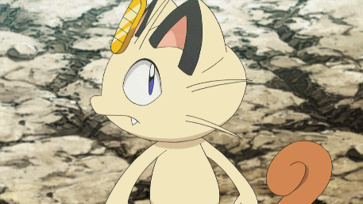

Meowth
(Japanese: ニャース Nyarth) a Normal-type Pokémon introduced in Generation I. It evolves into Persian starting at level 28.
Biology
Meowth is a small, feline Pokémon with cream-colored fur that turns brown at the tips of its hind paws and tail. Its ovoid head features four prominent whiskers, wide eyes with slit pupils, two pointed teeth in the upper jaw, and a gold koban coin embedded in its forehead. Its ears are black with brown interiors and are flanked with an additional pair of long whiskers. Meowth is a quadruped with the ability to walk on its hind legs; while the games almost always depict Meowth on two legs, the anime states that Meowth normally walks on all fours. It can freely manipulate its claws, retracting them when it wants to move silently. The tip of its tail curls tightly..
Pokémon (2016)